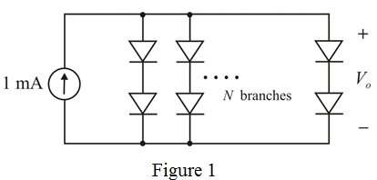

Step 1:
At  , the current flowing through a diode is
, the current flowing through a diode is  .
.
Consider two diodes are connected in series combination.
The total voltage drop across the series diode branch is .
Consider N parallel branches are required to meet the 1 mA source and 1.25 V reference voltage design specifications.
The required circuit diagram is shown in Figure 1.

Step 2:
At , current flowing through the diode , is .
is .
The Output voltage of the circuit shown in Figure 1 should be .
Thus, the voltage at each diode is,
Step 3:
Equation for diode current is
…… (1)
Substitute and in equation (1).
…… (2)
Substitute and in equation (2).
…… (3)
Divide equation (2) with equation (3)
Thus,  parallel branches should be connected to get the required voltage.
parallel branches should be connected to get the required voltage.
Thus, total diodes required to construct the circuit diagram are: .
Step 4:
Ten identical parallel branches are there across the current source, hence current flowing each branch is,
From diode current equation voltage across each branch is,
Thus, the output of the actual circuit is: .